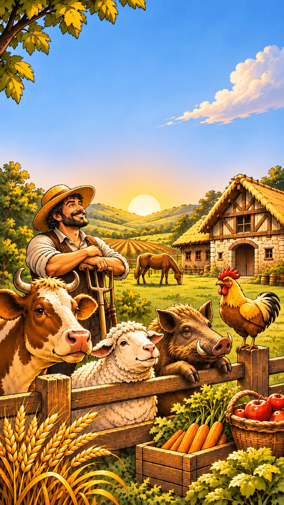

Agricola
Contador
Toca para empezar
Agricola
Contador
Clave de licencia
Activar
Comprar la clave
Probar gratis
Agricola
Contador
Continuar partida
Nueva partida
Jugadores
−
2
+
Bosques y Cenagales
Empezar partida
Agricola
Tabla de puntos
Terminar partida
Desglose
Revancha
Nueva partida
Volver a la hoja
Gira el móvil